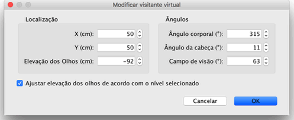
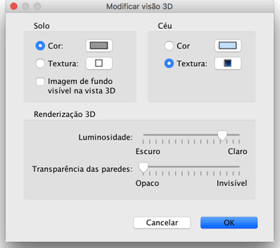

|
|
Editando a vis�o 3D | ||
|
Escolha Vis�o 3D> Vista a�rea ou vis�o 3D > Visita virtual para visualizar os dois pontos vista poss�veis na vis�o 3D.
Quando a Vista a�rea � selecionada, a vis�o 3D mostra sua casa em 3 dimens�es,
que s�o vistas de cima. Nesse modo, quando voc� movimenta o mouse para a esquerda ou
para a direita com o bot�o esquerdo pressionado, faz com que a casa gire em torno do
eixo vertical, que est� localizado no centro da casa ; Quando voc� move o mouse
para frente ou para tr�z com o bot�o esquerdo pressionado, faz com que a casa gire no
eixo horizontal ; Girando a roda do mouse, faz a vis�o aproximar da casa.
Quando o Visitante virtual � selecionado, um visitante virtual � desenhado no plano da casa. Sua localiza��o e �ngulo � atualizado simultaneamente no pano e na vis�o 3D a cada movimento feito. Esse visitante virtual � cercado por 4 indicadores.
|


|
|
Quando o mouse est� sobre um dos ombros do visitante, ele muda para indicar que voc�
pode clicar e arrastar esse ponto para mudar o �ngulo da cabe�a ou do corpo do
visitante. Quando voc� pressiona o bot�o do mouse, uma dica mostra o valor do �ngulo
editado.
 Esse painel permite tamb�m alterar o campo de vis�o do visitante virtual, configurando onde o valor total de eleva��o do ponto de vista deve ser ajustado de acordo com o n�vel corrente selecionado, fazendo com que o visitante virtual v� para cima ou para baixo no n�vel selecionado. Finalmente, o menu vis�o 3D > Modificar vis�o 3D... exibe o painel de vis�o 3D na qual lhe permite alterar a cor ou textura do ch�o ou do c�u, o brilho das luzes e a transpar�ncia das paredes (e pisos).  |
|